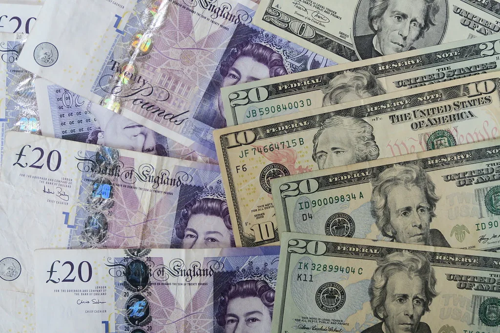

원/달러 환율 1480원대…중동 불안·강달러에 고환율 지속
원/달러 환율이 1480원 초중반대에서 등락하며 고환율 국면이 이어지고 있다. 서울 외환시장에서 원/달러 환율은 전 거래일보다 오르며 1480원 선을 기록했다. 중동발 지정학적 불안과 미국의 상대적 고금리 기조가 맞물리면서 안전자산으로 꼽히는 달러에 자금이 몰리는 흐름이 계속되는 모습이다. 최근 수개월째 이어져 온 원화 고환율 흐름이 좀처럼 꺾이지 않으면서, 수입 물가와 가계, 기업의 환차손 부담에 대한 우려도 함께 커지고 있다.
이번 환율 상승의 배경으로는 중동 지역의 지정학적 긴장이 다시 고조된 점이 꼽힌다. 지정학적 리스크가 커질 때마다 투자자들이 안전자산인 달러를 선호하는 경향이 뚜렷해지는데, 최근에는 국제 유가 급등과 미 국채 금리 상승까지 겹치면서 달러화 지수 자체가 강세를 보이고 있다. 이 같은 대외 요인이 원화 약세 압력으로 고스란히 전가되는 형국이다.

국내 요인도 환율 상승 압력에 일부 영향을 미치고 있다는 분석이 나온다. 한국은행이 최근 기준금리를 인상했음에도 미국과의 금리 격차가 여전히 상당한 수준이어서, 자금 유출 우려를 완전히 잠재우기에는 역부족이라는 평가다. 여기에 국내 기업들의 해외 배당 및 결제 수요가 겹치는 시기와 맞물리면서 단기적인 달러 수요 증가도 환율에 영향을 준 것으로 풀이된다. 외국인 투자자들의 국내 증시 순매수 기조가 이어지고 있음에도 환율 상승세가 꺾이지 않는 점은, 이번 고환율이 국내 요인보다는 대외 변수에 더 크게 좌우되고 있음을 보여준다는 분석도 나온다.
외환당국은 환율 변동성이 과도하게 커질 경우 시장 안정 조치에 나설 수 있다는 원칙적인 입장을 유지하고 있다. 다만 현재 수준이 과거 위기 국면과 같은 급격한 쏠림 현상으로 보기는 어렵다는 평가가 우세해, 당장 적극적인 개입보다는 시장 상황을 예의주시하는 수준에 그칠 것이라는 전망이 많다. 수출기업들 사이에서는 환율 상승이 가격 경쟁력 측면에서 나쁘지 않다는 반응도 있지만, 원자재 수입 비중이 높은 업종은 비용 부담 증가를 우려하는 목소리도 나온다.
시장에서는 향후 환율 흐름을 두고 시나리오가 엇갈린다. 중동 지역 긴장이 완화되고 미국의 금리 인하 기조가 뚜렷해질 경우 환율이 점차 안정될 수 있다는 낙관론이 있는 반면, 지정학적 불확실성과 고금리 기조가 장기화하면 1400원대 후반 수준이 상당 기간 유지될 수 있다는 관측도 나온다. 결국 대외 변수의 향방이 향후 원화 가치 흐름을 좌우할 핵심 변수로 꼽힌다. 일각에서는 국내 수출 대기업들의 실적이 견조한 흐름을 이어가고 있는 만큼, 환율 자체보다는 변동성의 크기와 속도가 더 중요한 관리 대상이라는 지적도 나온다.
전문가들은 당분간 환율이 대외 뉴스에 민감하게 반응하는 흐름을 이어갈 것으로 내다보고 있다. 특히 중동 정세와 미국 연방준비제도의 통화정책 관련 발언이 나올 때마다 환율이 출렁일 가능성이 높은 만큼, 기업과 투자자 모두 당분간 환율 변동성에 대비한 리스크 관리가 필요하다는 조언이 나온다. 정부와 한국은행도 필요시 시장 상황에 맞춰 적절한 조치를 취하겠다는 원칙을 재확인하며 외환시장 동향을 면밀히 살피고 있다.